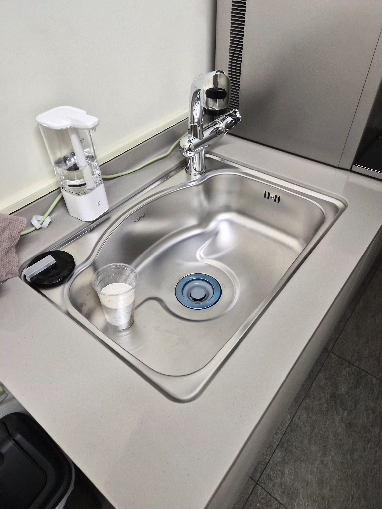
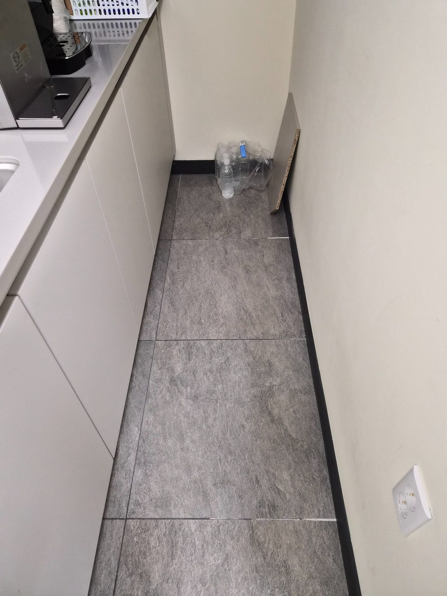
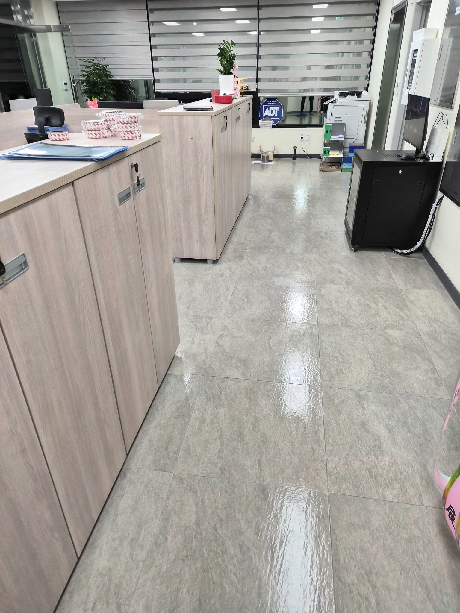
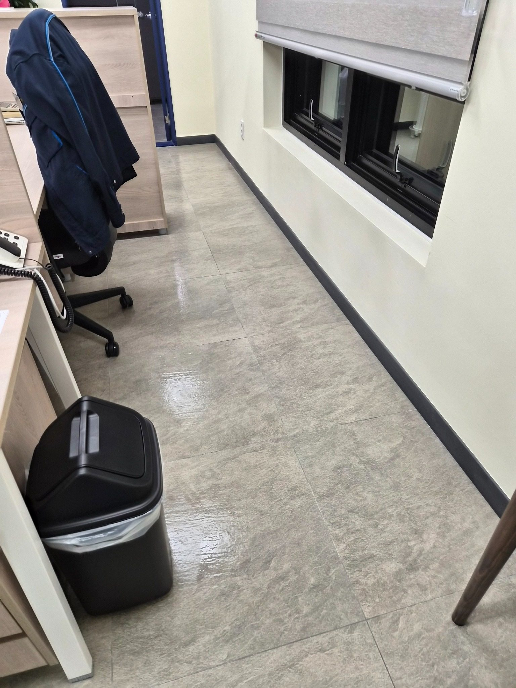
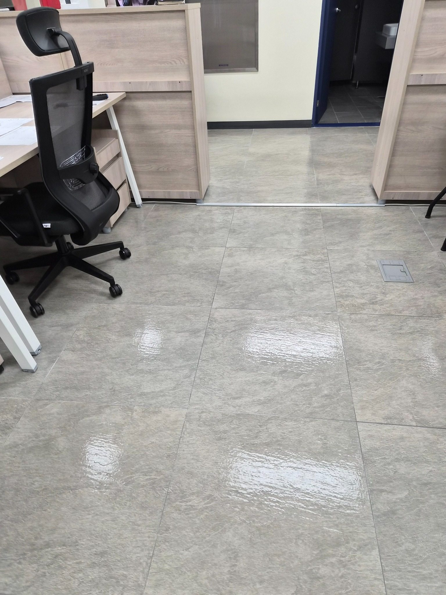
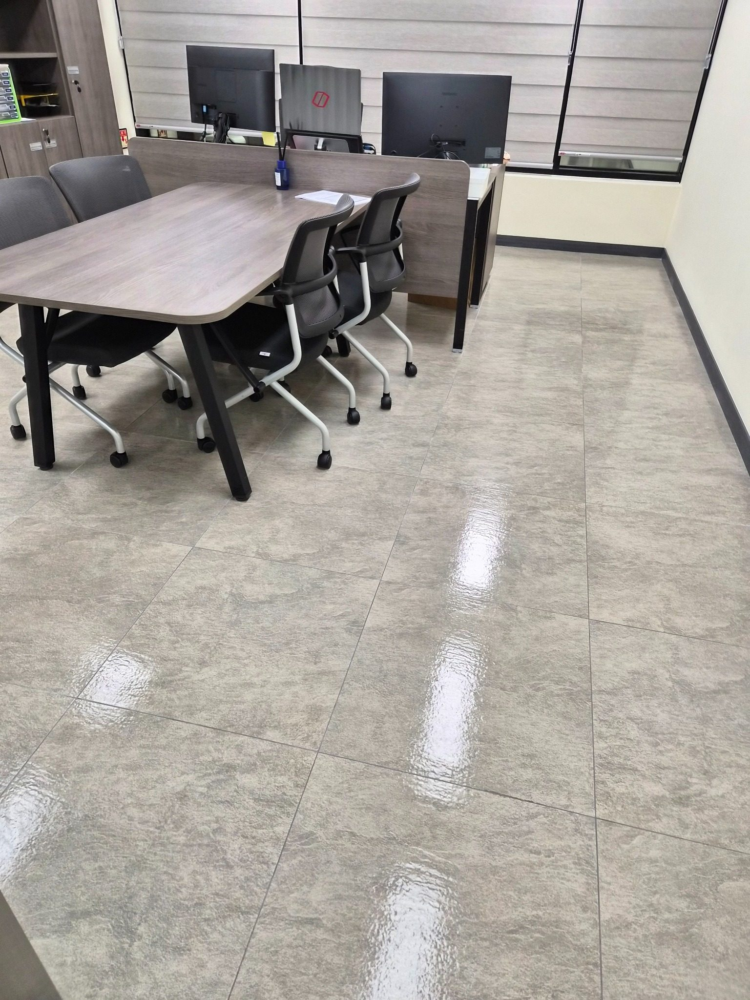
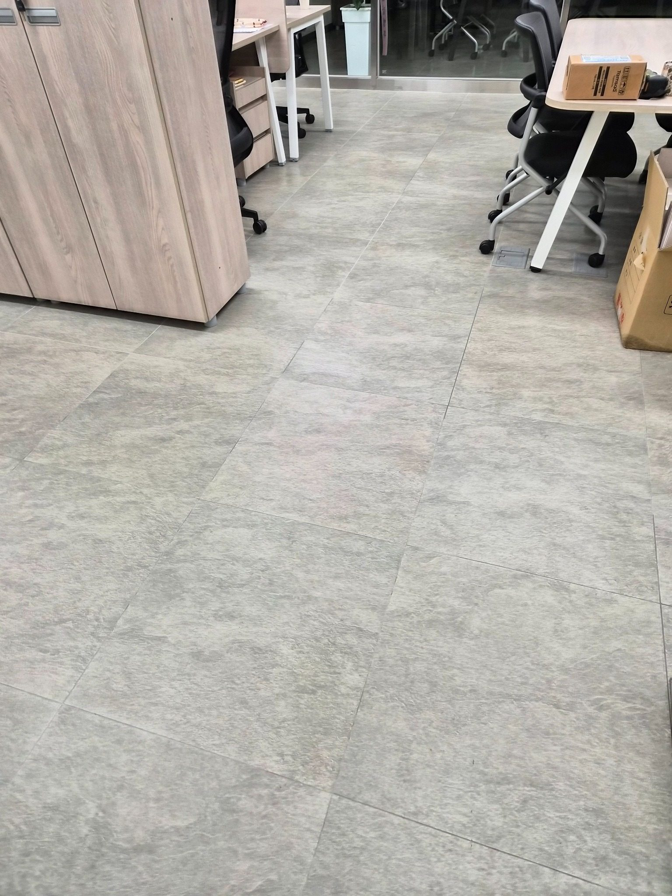
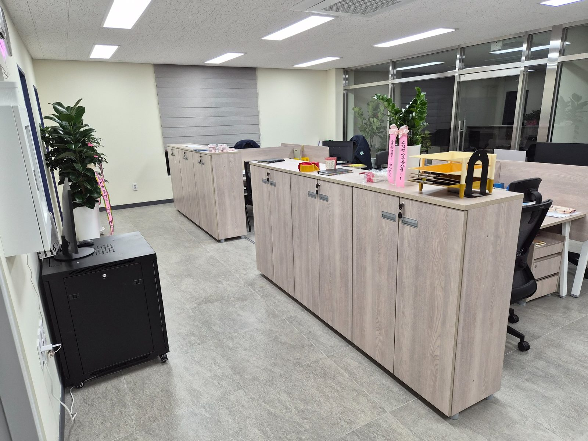
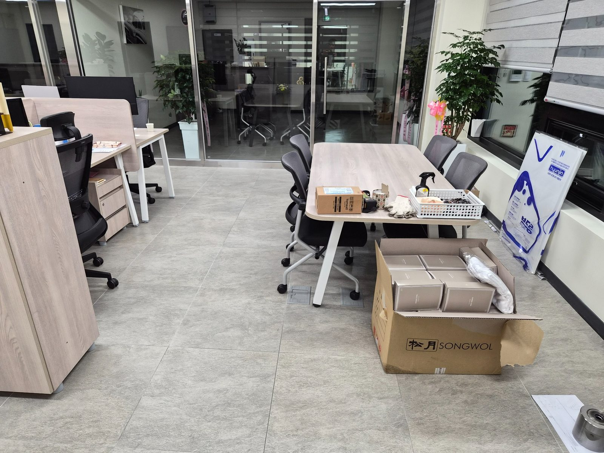

김해 기업체 사무실 정기청소 | 업무공간·회의실·탕비실 관리
기업체 사무실은 업무공간과 회의실, 창가 통로, 수납장 주변, 탕비실처럼 서로 다른 사용 구역이 연결돼 있습니다. 직원이 근무하는 동안 먼지와 생활오염이 반복되기 때문에 한 구역만 닦기보다 전체 동선을 기준으로 정기적으로 관리하는 것이 중요합니다.
직원 수, 방문객 수, 운영시간, 바닥 재질, 회의실과 탕비실 사용량, 관리해야 하는 공용부 범위를 확인해 주 1회부터 주 6회까지 상담합니다.
주촌·대동·상동·진례·한림 등 공단권과 내외동·삼계동·장유·율하·진영 등 사무실과 상업시설이 많은 지역을 중심으로 상담합니다.

탕비실 싱크대와 바닥 관리
탕비실은 물 사용이 잦아 싱크대 주변과 바닥에 물자국과 생활오염이 남기 쉬워 함께 관리합니다.

좁은 수납장 옆 바닥 정리
수납장 옆 좁은 공간은 청소가 빠지기 쉬운 구간이므로 벽면과 바닥 모서리까지 확인합니다.

업무공간 전체 동선 확인
업무공간은 책상과 수납장이 많아 중앙 통로뿐 아니라 가구 주변까지 관리 범위를 나눠 진행합니다.

창가와 벽면 가장자리 관리
창가와 벽면 가장자리는 눈에 잘 띄지 않지만 먼지가 쌓이기 쉬워 정기적으로 확인합니다.

책상 사이 통로 바닥 정리
책상 사이 통로는 의자 이동과 직원 동선이 겹쳐 먼지와 작은 오염이 빠르게 누적됩니다.

회의 테이블 주변 관리
회의 공간은 테이블과 의자 하부까지 확인해 방문객이 이용할 때 깔끔한 상태를 유지합니다.

업무공간 바닥 전체 마무리
청소 후 바닥은 조명 반사를 기준으로 얼룩과 잔여 오염이 남지 않았는지 다시 확인합니다.

수납장과 공용 통로 점검
수납장 앞과 공용 통로는 이동량이 많아 업무공간 전체의 청결 인상을 좌우하는 구간입니다.

사무실 전체 청결 상태 확인
마지막으로 사무실 전체를 한 번 더 확인해 업무공간, 회의실, 탕비실과 공용 동선 상태를 점검합니다.
김해 청소 무료 방문견적
현장 규모, 이용 인원, 운영시간, 오염 정도와 관리 범위를 확인한 뒤 무료 방문견적으로 안내합니다. 정기청소는 현장 상황에 따라 주 1회부터 주 6회까지 상담 가능합니다.
무료 방문견적 요청010-7246-5626